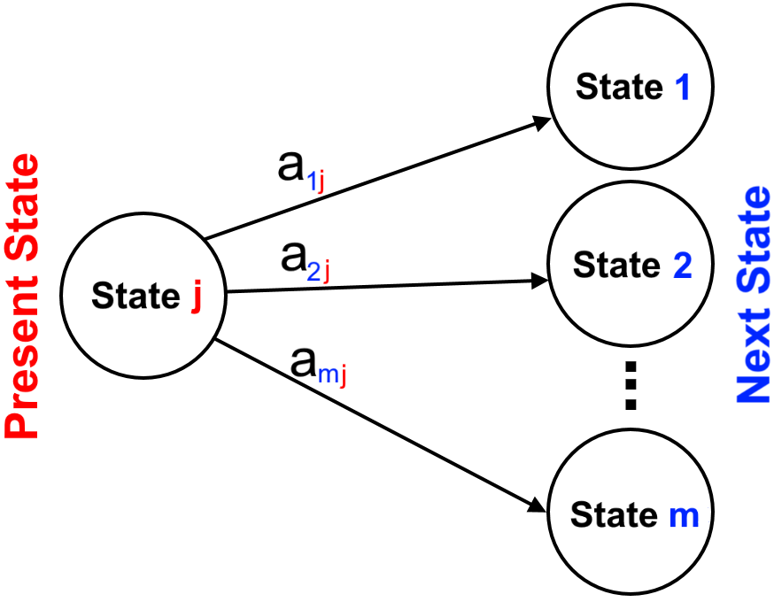

Applications of Spectral Theory
Suppose we have a matrix \(A\) and we want to find \(A^{20}\). You could try to multiply A with itself 20 times; however, this is computationally extremely intensive and it is not recommended. We also can diagonalization to compute high powers of a matrix relatively easily.
Suppose \(A\) is diagonalizable, so there is an invertible matrix \(P\) such that \(P^{-1} AP = D\). We can rearrange this equation to
\[\begin{align*}
&P^{-1} AP = D,\\
\Rightarrow \quad&PP^{-1} AP = PD,\\
\Rightarrow \quad & AP=PD,\\
\Rightarrow \quad&APP^{-1}=PDP^{-1},\\
\Rightarrow \quad & A=PDP^{-1}.
\end{align*}\]
Now, consider \(A^2\). Since \(A=PDP^{-1}\), it follows that
\[\begin{align*}
A^2=\underbrace{PDP^{-1}}_{A}\underbrace{PDP^{-1}}_{A}=PD^2P^{-1}.
\end{align*}\]
Similarly,
\[\begin{align*}
A^3=\underbrace{PDP^{-1}}_{A}\underbrace{PDP^{-1}}_{A}\underbrace{PDP^{-1}}_{A}=PD^3P^{-1}.
\end{align*}\]
In general,
\[\begin{align*}
A^n=\underbrace{PDP^{-1}PDP^{-1}\ldots PDP^{-1}}_{n\text{ times}}=PD^nP^{-1}.
\end{align*}\]
Therefore, we have reduced the problem to finding \(D^n\). In order to compute \(D^n\) , then because \(D\) is diagonal we only need to raise every entry on the main diagonal of \(D\) to the power of \(n\).
Example:
Let \(A =\begin{bmatrix} 1 & 1 & 0\\ 0 & 2 & 0\\ 0 & 2 & 1 \end{bmatrix}\). Find \(A^{10}\).
Solution:
The characteristic polynomial:
\[\begin{align*}
c_A (\lambda) &= \det(\lambda I-A)=
\left|\begin{array}{ccc} \lambda -1 & -1 & 0\\ 0 & \lambda -2 & 0\\ 0 & -2 & \lambda -1 \end{array}\right|
\\&=
(\lambda -1)\left|\begin{array}{cc} \lambda -2 & 0\\ -2 & \lambda -1 \end{array}\right| \\&=
(\lambda - 2)(\lambda - 1)^2
\end{align*}\]
The eigenvalues of \(A\) are the the roots of \(c_A(\lambda)\):
\[\begin{align*}
\lambda_1 =\lambda_2= 1 \quad \text{and} \quad \lambda_3 = 2.
\end{align*}\]
Note that here \(2\) is the dominant eigenvalue of \(A\) since \(|\lambda_3|=|2|>|1|=|\lambda_1|=|\lambda_2|\).
\(\lambda_1 =\lambda_2= 1\)
The eigenvectors corresponding to \(\lambda_1 =\lambda_2 = 1\):
\[\begin{align*}
&(\lambda_1 I-A)X =0,
\quad \Rightarrow \quad
\left(I-\begin{bmatrix} 1 & 1 & 0\\ 0 & 2 & 0\\ 0 & 2 & 1 \end{bmatrix} \right)X =\begin{bmatrix}0\\ 0\\0\end{bmatrix},
\quad \Rightarrow \quad
\begin{bmatrix}0 & -1 & 0\\ 0 & -1 & 0\\ 0 & -2 & 0 \end{bmatrix}X =\begin{bmatrix}0\\ 0\\0\end{bmatrix}.
\end{align*}\]
The augmented matrix for finding the solutions is given by
\[\begin{align*}
\left[\begin{array}{ccc|c} 0 & -1 & 0 & 0\\ 0 & -1 & 0 & 0\\ 0 & -2 & 0 & 0 \end{array}\right]
\end{align*}\]
and the reduced row-echelon form of this matrix is
\[\begin{align*}
\left[\begin{array}{ccc|c} 0 & {1} & 0 & 0\\ 0 & 0 & 0 & 0\\ 0 & 0 & 0 & 0 \end{array}\right]
\end{align*}\]
Hence, the general solution \(X\) to \((I-A)X =0\) is
\[\begin{align*}
s \begin{bmatrix} 1\\ 0\\ 0 \end{bmatrix}+t \begin{bmatrix} 0\\ 0\\ 1 \end{bmatrix},\quad s,t\neq0.
\end{align*}\]
Therefore, we can use \(X_1 =\begin{bmatrix} 1\\ 0\\ 0 \end{bmatrix}\)
and \(X_2 =\begin{bmatrix} 0\\ 0\\ 1 \end{bmatrix}\) as the basic eigenvectors corresponding to \linebreak \(\lambda_1=\lambda_2= 1\).
Similarly,
\[\begin{align*}
&(\lambda_3 I-A)X =0,
\quad \Rightarrow \quad
\left(2I-\begin{bmatrix} 1 & 1 & 0\\ 0 & 2 & 0\\ 0 & 2 & 1 \end{bmatrix} \right)X =\begin{bmatrix}0\\ 0\\0\end{bmatrix},
\quad \Rightarrow \quad
\begin{bmatrix}1 & -1 & 0\\ 0 & 0 & 0\\ 0 & -2 & 1 \end{bmatrix}X =\begin{bmatrix}0\\ 0\\0\end{bmatrix}.
\end{align*}\]
The augmented matrix:
\[\begin{align*}
\left[\begin{array}{ccc|c} 1 & -1 & 0 & 0\\ 0 & 0 & 0 & 0\\ 0 & -2 & 1 & 0 \end{array}\right]
\end{align*}\]
and the reduced row-echelon form:
\[\begin{align*}
\left[\begin{array}{ccc|c} {1} & 0 & -\frac{1}{2} & 0\\ 0 & {1} & -\frac{1}{2} & 0\\ 0 & 0 & 0 & 0 \end{array}\right]
\end{align*}\]
Letting \(t=2\), the general solution \(X\) to \((4I-A)X =0\) is
\[\begin{align*}
t \begin{bmatrix} 1/2\\1/2\\1 \end{bmatrix},\quad t\neq0.
\end{align*}\]
Therefore, we can use \(X_3 =\begin{bmatrix} 1\\1\\2 \end{bmatrix}\) as the basic eigenvector corresponding to \(\lambda_3 = 2\).
We can construct matrix \(P\) as follows.
\[\begin{align*}
P =\begin{bmatrix} | & | & |\\ X_1 & X_2 & X_3\\ | & | & |\end{bmatrix}=
\begin{bmatrix}1 & 0 & 1\\ 0 & 0 & 1\\ 0 & 1 & 2 \end{bmatrix}.
\end{align*}\]
It follows that,
\[\begin{align*}
P^{-1} =\begin{bmatrix} 1 & -1 & 0\\ 0 & -2 & 1\\ 0 & 1 & 0 \end{bmatrix}.
\end{align*}\]
Therefore,
\[\begin{align*}
D=P^{-1}AP=
\begin{bmatrix} 1 & -1 & 0\\ 0 & -2 & 1\\ 0 & 1 & 0 \end{bmatrix}
\begin{bmatrix} 1 & 1 & 0\\ 0 & 2 & 0\\ 0 & 2 & 1 \end{bmatrix}
\begin{bmatrix}1 & 0 & 1\\ 0 & 0 & 1\\ 0 & 1 & 2 \end{bmatrix}
=\begin{bmatrix} 1 & 0 & 0\\ 0 & 1 & 0\\ 0 & 0 & 2 \end{bmatrix}
=\begin{bmatrix} {\color{red}\lambda_1} & 0 & 0\\ 0 & {\color{red}\lambda_2} & 0\\ 0 & 0 & {\color{red}\lambda_3} \end{bmatrix}.
\end{align*}\]
Now, we have,
\[\begin{align*}
P=\begin{bmatrix}1 & 0 & 1\\ 0 & 0 & 1\\ 0 & 1 & 2 \end{bmatrix},~
P^{-1}=\begin{bmatrix} 1 & -1 & 0\\ 0 & -2 & 1\\ 0 & 1 & 0 \end{bmatrix},
\text{ and }
D=\begin{bmatrix} 1 & 0 & 0\\ 0 & 1 & 0\\ 0 & 0 & 2 \end{bmatrix}.
\end{align*}\]
Therefore,
\[\begin{align*}
A^{10}=PD^{10}P^{-1}&=
\begin{bmatrix}1 & 0 & 1\\ 0 & 0 & 1\\ 0 & 1 & 2 \end{bmatrix}
\begin{bmatrix} 1 & 0 & 0\\ 0 & 1 & 0\\ 0 & 0 & 2 \end{bmatrix}^{10}
\begin{bmatrix} 1 & -1 & 0\\ 0 & -2 & 1\\ 0 & 1 & 0 \end{bmatrix} \\ &=
\begin{bmatrix}1 & 0 & 1\\ 0 & 0 & 1\\ 0 & 1 & 2 \end{bmatrix}
\begin{bmatrix} 1^{10} & 0 & 0\\ 0 & 1^{10} & 0\\ 0 & 0 & 2^{10} \end{bmatrix}
\begin{bmatrix} 1 & -1 & 0\\ 0 & -2 & 1\\ 0 & 1 & 0 \end{bmatrix} \\ &=
\begin{bmatrix}1 & 0 & 1\\ 0 & 0 & 1\\ 0 & 1 & 2 \end{bmatrix}
\begin{bmatrix} 1 & 0 & 0\\ 0 & 1 & 0\\ 0 & 0 & 2^{10} \end{bmatrix}
\begin{bmatrix} 1 & -1 & 0\\ 0 & -2 & 1\\ 0 & 1 & 0 \end{bmatrix} \\ &=
\begin{bmatrix} 1 & 0 & 2^{10}\\ 0 & 0 & 2^{10}\\ 0 & 1 & 2^{11} \end{bmatrix}
\begin{bmatrix} 1 & -1 & 0\\ 0 & -2 & 1\\ 0 & 1 & 0 \end{bmatrix}=
\begin{bmatrix}1 & 2^{10}-1 & 0\\ 0 & 2^{10} & 0\\ 0 & 2(2^{10}-1) & 1 \end{bmatrix}.
\end{align*}\]
Raising a Symmetric Matrix to a High Power
Symmetric and Skew Symmetric Matrices: \(A\) real \(n\times n\) matrix \(A\), is symmetric if \(A^T = A\). If \(A = -A^T\), then \(A\) is called skew symmetric.
Theorem: Properties of Trace
The eigenvalues of any real symmetric matrix are real.
Similar Matrices:
If \(A\) and \(B\) be \(n\times n\), we say that \(A\) and \(B\) are similar, and write \(A \sim B\), if \(B = P^{-1} AP\) for some invertible matrix \(P\).
Orthogonal Matrices: \(A\) real \(n\times n\) matrix \(U\) is called an orthogonal matrix if \(UU^T =U^T U = I\).
Example:
Show the matrix \(U =\left[\begin{array}{ccc} 1 & 0 & 0\\ 0 & 0 & -1\\ 0 & -1 & 0 \end{array}\right]\) is orthogonal.
Solution:
\[\begin{align*}
&UU^T =\left[\begin{array}{ccc} 1 & 0 & 0\\ 0 & 0 & -1\\ 0 & -1 & 0 \end{array}\right]
\left[\begin{array}{ccc} 1 & 0 & 0\\ 0 & 0 & -1\\ 0 & -1 & 0 \end{array}\right]
=\left[\begin{array}{ccc} 1 & 0 & 0\\ 0 & 1 & 0\\ 0 & 0 & 1 \end{array}\right],
\\&
U^T U = \left[\begin{array}{ccc} 1 & 0 & 0\\ 0 & 0 & -1\\ 0 & -1 & 0 \end{array}\right]
\left[\begin{array}{ccc} 1 & 0 & 0\\ 0 & 0 & -1\\ 0 & -1 & 0 \end{array}\right]
=\left[\begin{array}{ccc} 1 & 0 & 0\\ 0 & 1 & 0\\ 0 & 0 & 1 \end{array}\right].
\end{align*}\]
Hence, this matrix is orthogonal.
Theorem: Determinant of Orthogonal Matrices
Suppose \(U\) is an orthogonal matrix. Then, \(\det(U) = 1\) or \(\det(U) = -1\).
Example:
We can see that
\[\begin{align*}
\det(U)=\left|\begin{array}{ccc} 1 & 0 & 0\\ 0 & 0 & -1\\ 0 & -1 & 0 \end{array}\right|=-1.
\end{align*}\]
We know that a matrix \(A\) is called symmetric if \(A = A^T\). If the
matrix \(A\) is symmetric, then we can actually find such a matrix \(P\)
that is an orthogonal matrix of eigenvectors. Thus \(P^{-1}\) is simply
its transpose \(P^T\), and \(P^T AP\) is diagonal. When this happens we say
that \(A\) is orthogonally diagonalizable.
orthogonally diagonalizable: An \(n\times n\) matrix \(A\) is said to be orthogonally diagonalizable
when an orthogonal matrix \(P\) can be found such that
\(P^{-1} AP = P^T AP\) is diagonal.
Remark:
For the next example and similar examples for symmetric matrices, we need to normalize eigenvectors. In this course, we usually normalize eigenvectors when it comes to using \(D=P^T AP\) instead of \(D=P^{-1} AP\).
Markov Matrices
Markov chain: A Markov chain is such an evolving system in which the next state only depends on its present state (not the earlier history of the system).
Transition Matrix: A transition Matrix comprised of non-negative numbers which the sum of each column is equal to one.
This matrix matrix can be shown as \(A =[a_{ij}]_{n\times n}\) where \(a_{ij}\) denotes the probability of transition to state \(i\) from state \(j\).

State Vector: Let \(x_{in}\) denote the probability that the system is in state \(i\) after \(m\) transitions. The \(n\times 1\) matrices
\[\begin{align*}
X_n=\begin{bmatrix}x_{1n}\\x_{2n}\\ \vdots \\ x_{mn}\end{bmatrix}.
\end{align*}\]
\(X_n\) is called the state vector at period \(n\). Similarly, \(X_0\) is called the initial state vector for the Markov chain.
Remark:
The transition matrix also is known as the Migration matrix.
Theorem:
Let \(A\) be the transition matrix for a \(m\)-state Markov chain, and let \(X_n\) be the vector whose entries give the population of each location at time period \(n\). Then \(X_n\) is the state vector at period \(n\) and it follows that
\[\begin{aligned}
&X_{n+1} = AX_n, & n=0,1,2,\ldots.\end{aligned}\]
Example:
Consider the migration matrix
\[\begin{align*}
A=\left[\begin{array}{ccc} 0.5 & 0.2 & 0.4\\ 0.3 & 0.4 & 0\\ 0.2 & 0.4 & 0.6 \end{array}\right]
\end{align*}\]
for locations 1,2, and 3. Suppose initially there are 150 residents in location 1 , 150 in location 2 and 200 in location 3 . Find the population in the three locations after 5 units of time.
Solution:
The initial state vector
\[\begin{align*}
X_0=\left[\begin{array}{c} 150.0\\ 150.0\\ 200.0 \end{array}\right]
\begin{array}{c} \leftarrow~\text{Population in location 1}\\ \leftarrow~\text{Population in location 2}\\ \leftarrow~\text{Population in location 3} \end{array}.
\end{align*}\]
We can find the population in each location using the equation \(X_{n+1} =AX_{n}\). We have
\[\begin{align*}
X_1&=AX_0=\left[\begin{array}{ccc} 0.5 & 0.2 & 0.4\\ 0.3 & 0.4 & 0\\ 0.2 & 0.4 & 0.6 \end{array}\right]\left[\begin{array}{c} 150.0\\ 150.0\\ 200.0 \end{array}\right]=\left[\begin{array}{c} 185.0\\ 105.0\\ 210.0 \end{array}\right], \\
X_2&=AX_1=\left[\begin{array}{ccc} 0.5 & 0.2 & 0.4\\ 0.3 & 0.4 & 0\\ 0.2 & 0.4 & 0.6 \end{array}\right]\left[\begin{array}{c} 185.0\\ 105.0\\ 210.0 \end{array}\right]=\left[\begin{array}{c} 197.5\\ 97.5\\ 205.0 \end{array}\right], \\
X_3&=AX_2=\left[\begin{array}{ccc} 0.5 & 0.2 & 0.4\\ 0.3 & 0.4 & 0\\ 0.2 & 0.4 & 0.6 \end{array}\right]\left[\begin{array}{c} 197.5\\ 97.5\\ 205.0 \end{array}\right]=\left[\begin{array}{c} 200.25\\ 98.25\\ 201.5 \end{array}\right], \\
X_4&=AX_3=\left[\begin{array}{ccc} 0.5 & 0.2 & 0.4\\ 0.3 & 0.4 & 0\\ 0.2 & 0.4 & 0.6 \end{array}\right]\left[\begin{array}{c} 200.25\\ 98.25\\ 201.5 \end{array}\right]=\left[\begin{array}{c} 200.375\\ 99.375\\ 200.25 \end{array}\right], \\
X_5&=AX_4=\left[\begin{array}{ccc} 0.5 & 0.2 & 0.4\\ 0.3 & 0.4 & 0\\ 0.2 & 0.4 & 0.6 \end{array}\right]\left[\begin{array}{c} 200.375\\ 99.375\\ 200.25 \end{array}\right]=\left[\begin{array}{c} 200.1625\\ 99.8625\\ 199.975 \end{array}\right]
\begin{array}{c} \leftarrow~\text{Population in location 1}\\ \leftarrow~\text{Population in location 2}\\ \leftarrow~\text{Population in location 3} \end{array}.
\end{align*}\]
Since we are speaking about populations, we would need to round these numbers to provide a logical answer. Therefore, we can say that after 5 units of time, there will be 200 residents in location one, 100 in location two, and 200 in location three.
Note that the total population is unchanged, it simply migrates
within the given locations.
Simplified Weather Model:
On any particular day, the weather is said to occupy one of three possible states:
Sunny (S),
Cloudy (C),
Rainy (R).
In this case, the stages are the days.
Example:
The values 40%, 40% and 20% are transition probabilities, and are
assumed to be known.
If it is cloudy one day, then there is a 40% chance it will be rainy
the next day, and a 25% chance that it will be sunny the next day.
If it is rainy one day, then there is a 30% chance it will be rainy
the next day, and a 50% chance that it will be cloudy the next day.
suppose that it is cloudy on Wednesday. What is the probability that it will be rainy on Friday?
Solution:
We put the transition probabilities into a transition matrix,

Note that the sum of the entries in each column is equal to one.
The initial state vector, \(X_0\), corresponds to the state of the weather on Wednesday (it is cloudy); therefore,
\[\begin{align*}X_0 =\left[\begin{array}{l}0 \\ 1 \\ 0\end{array}\right]
\begin{array}{c}\mbox{S} \\ \mbox{C} \\ \mbox{R} \end{array}
\end{align*}\]
The state vector for Thursday:
\[\begin{align*}
X_1&=AX_0=\left[\begin{array}{ccc} 0.4 & 0.25 & 0.2\\ 0.4 & 0.35 & 0.5\\ 0.2 & 0.4 & 0.3 \end{array}\right]\left[\begin{array}{c} 0\\ 1.0\\ 0 \end{array}\right]=\left[\begin{array}{c} 0.25\\ 0.35\\ 0.4 \end{array}\right]
\begin{array}{c}\mbox{S} \\ \mbox{C} \\ \mbox{R} \end{array}.
\end{align*}\]
The state vector for Friday:
\[\begin{align*}
X_2&=AX_1=\left[\begin{array}{ccc} 0.4 & 0.25 & 0.2\\ 0.4 & 0.35 & 0.5\\ 0.2 & 0.4 & 0.3 \end{array}\right]\left[\begin{array}{c} 0.25\\ 0.35\\ 0.4 \end{array}\right]=\left[\begin{array}{c} 0.2675\\ 0.4225\\ 0.31 \end{array}\right]
\begin{array}{c}\mbox{S} \\ \mbox{C} \\ \mbox{R} \end{array}.
\end{align*}\]
Therefore, the probability that it will be rainy on Sunday is 31.00%.
Random Walks
Suppose a walker has \(m\) locations to choose from, denoted by \(1,2,\ldots ,m\). Let \(a_{ij}\) denote the probability that the person will travel to location \(i\) from location \(j\). Again, this requires that
\[\begin{align*}
\sum_{i=1}^{k} a_{ij}= 1
\end{align*}\]
In this context, the vector
\[\begin{align*}
X_{{\color{red}n}}=\begin{bmatrix}x_{{\color{blue}1}{\color{red}n}}
\\x_{{\color{blue}2}{\color{red}n}}
\\x_{{\color{blue}3}{\color{red}n}}
\\ \vdots
\\x_{{\color{blue}m}{\color{red}n}}
\end{bmatrix}
\end{align*}\]
contains the probabilities \(x_{in}\) the walker ends up in location
\(i\), \(1 \leq i \leq m\) at time \(n\).
Example:
A person sets off on a random walk with three possible locations. The Markov matrix of
probabilities \(A = [a_{i,j}]\) is given by
\[\begin{align*}
A=\left[\begin{array}{ccc} 0.1 & 0.3 & 0.5\\ 0.1 & 0.3 & 0.2\\ 0.8 & 0.4 & 0.3 \end{array}\right].
\end{align*}\]
If the walker starts in location 1, what is the probability of ending back in location 3 at time \(n = 3\)?
Solution:
We need to find \(x_{{\color{blue}m}{\color{red}n}}\) with \({\color{blue}m=3}\) and \({\color{red}n=3}\). Since the walker begins in location 1, we have
\[\begin{align*}
X_{{\color{red}0}}=\begin{bmatrix}x_{{\color{blue}1}{\color{red}0}}
\\x_{{\color{blue}2}{\color{red}0}}
\\x_{{\color{blue}3}{\color{red}0}}\end{bmatrix}
=\left[\begin{array}{c} 1\\ 0\\ 0 \end{array}\right]\begin{array}{c} \leftarrow~\text{location 1}\\ \leftarrow~\text{location 2}\\ \leftarrow~\text{location 3} \end{array}.
\end{align*}\]
Using \(X_{n+1} = AX_n\), we have
\[\begin{align*}
X_1=AX_0&=
\left[\begin{array}{ccc} 0.1 & 0.3 & 0.5\\ 0.1 & 0.3 & 0.2\\ 0.8 & 0.4 & 0.3 \end{array}\right]
\left[\begin{array}{c} 1\\ 0\\ 0 \end{array}\right]
=\left[\begin{array}{c} 0.1\\ 0.1\\ 0.8 \end{array}\right],
\\
X_2=AX_1&=
\left[\begin{array}{ccc} 0.1 & 0.3 & 0.5\\ 0.1 & 0.3 & 0.2\\ 0.8 & 0.4 & 0.3 \end{array}\right]
\left[\begin{array}{c} 0.1\\ 0.1\\ 0.8 \end{array}\right]
= \left[\begin{array}{c} 0.44\\ 0.2\\ 0.36 \end{array}\right],
\\
X_3=AX_2&=
\left[\begin{array}{ccc} 0.1 & 0.3 & 0.5\\ 0.1 & 0.3 & 0.2\\ 0.8 & 0.4 & 0.3 \end{array}\right]
\left[\begin{array}{c} 0.44\\ 0.2\\ 0.36 \end{array}\right]
= \left[\begin{array}{c} 0.284\\ 0.176\\ {0.54} \end{array}\right]
\begin{array}{c} \leftarrow~\text{location 1}\\ \leftarrow~\text{location 2}\\ \leftarrow~\text{location 3} \end{array}.
\end{align*}\]
Note that we only need location \(3\) at \(n=3\) (\(x_{{\color{blue}3}{\color{red}3}}\)); therefore, it is enough to compute only the (3,1)-entry of \(AX_2\),
\[\begin{align*}
\begin{bmatrix} 0.8 & 0.4 & 0.3 \end{bmatrix}\begin{bmatrix}0.44\\ 0.2\\ 0.36\end{bmatrix}=0.54
\end{align*}\]
Steady State Vector
When the state vector remains unchanged from a step to the next step, this vector is called the Steady State Vector.
Steady State Vector:
\[\begin{aligned}
X_s = AX_s\end{aligned}\] where \(X_s\) has positive entries which have the same sum as the entries of \(X_0\). As n increases, the state vectors \(X_n\) will approach \(X_s\).
Remark:
Note that the condition in above theorem can be written as \((I-A)X_s = 0\), representing a homogeneous system of equations (similar to eigenvectors corresponding \(\lambda=1\)).
Proposition: Eigenvalues of a Transition Matrix
Let \(A = [a_{ij}]\) be a transition (or migration) matrix. Then \(\lambda=1\) is always an eigenvalue for \(A\).
Example:
Consider the migration matrix
\[\begin{align*}
A =\left[\begin{array}{ccc} 0.4 & 0.2 & 0.4\\ 0.4 & 0.4 & 0.2\\ 0.2 & 0.4 & 0.4 \end{array}\right]
\end{align*}\]
for locations \(1\),\(2,\) and \(3\). Suppose initially there are \(100\) residents in location \(1\), \(300\) in location \(2\) and
\(200\) in location \(3\). Find the population in the three locations after a long time.
Solution:
After a long time, we reach a steady state. It follows from the above theorem that \(X_s = AX_s\), where \(X_s\) is a steady state vector. Finding this steady state vector, we have,
\[\begin{align*}
X_s = AX_s \Rightarrow (I-A)X_s=0 \quad \Rightarrow \quad&
\left(\begin{bmatrix}1 & 0 & 0\\ 0 & 1 & 0\\ 0 & 0 & 1\end{bmatrix}
-\left[\begin{array}{ccc} 0.4 & 0.2 & 0.4\\ 0.4 & 0.4 & 0.2\\ 0.2 & 0.4 & 0.4 \end{array}\right]\right)X_s=
\begin{bmatrix}0\\0\\0\end{bmatrix},
\\ \quad \Rightarrow \quad &
\left[\begin{array}{ccc} 0.6 & -0.2 & -0.4\\ -0.4 & 0.6 & -0.2\\ -0.2 & -0.4 & 0.6 \end{array}\right]X_s=
\begin{bmatrix}0\\0\\0\end{bmatrix}.
\end{align*}\]
The augmented matrix:
\[\begin{align*}
\left[\begin{array}{rrr|c} \frac{3}{5} & -\frac{1}{5} & -\frac{2}{5} & 0\\ -\frac{2}{5} & \frac{3}{5} & -\frac{1}{5} & 0\\ -\frac{1}{5} & -\frac{2}{5} & \frac{3}{5} & 0 \end{array}\right],
\end{align*}\]
and in RREF
\[\begin{align*}
\left[\begin{array}{ccc|c} {1} & 0 & -1 & 0\\ 0 & {1} & -1 & 0\\ 0 & 0 & 0 & 0 \end{array}\right].
\end{align*}\]
Therefore, general solution
\[\begin{align*}
X_s= t\begin{bmatrix}1 \\ 1 \\ 1\end{bmatrix}.
\end{align*}\]
The initial vector \(X_0\) is given by \(X_0=\begin{bmatrix}100 \\ 300 \\ 200\end{bmatrix}.\)
We know that \(X_s\) has positive entries which have the same sum as the entries of \(X_0\). Therefore,
\[\begin{align*}
\text{Sum of entries of $X_s$}&=\text{Sum of entries of $X_0$}\\
t+t+ t&=100+300+200,\\
3t&=600,\\
t&=200.
\end{align*}\]
Therefore, the population in the long run is given by
\[\begin{align*}
X_s= 200 \left[\begin{array}{c}1 \\ 1 \\ 1 \end{array}\right]=\left[\begin{array}{c} 200\\ 200\\ 200 \end{array}\right].
\end{align*}\]
Dynamical Systems
If \(A\) is an \(n\times n\) matrix, a sequence \(V_0, V_1 , V_2 , \ldots\) of columns in \(\mathbb{R}^n\) is called a linear dynamical system if \(v_0\) is specified and
\(V_1, V_2 ,\ldots\) are given by the matrix recurrence \(V_{n+1}= AV_n\) for each \(n \geq 0\).
Matrix Recurrence: Suppose a dynamical system is given by
\[\begin{align*}
\begin{cases}
x_{n+1} = ax_n +by_n,\\
y_{n+1} = cx_n +dy_n.
\end{cases}
\end{align*}\]
This system can be expressed as \(V_{n+1} = AV_n\) where \(V_n =\begin{bmatrix}x_{n}\\y_{n}\end{bmatrix}\) and
\(A =\begin{bmatrix}a & b\\c & d\end{bmatrix}\).
Solving a Dynamical System:
Suppose a dynamical system is given by \[\begin{aligned}
\begin{cases}
x_{n+1} = ax_n +by_n,\\
y_{n+1} = cx_n +dy_n.
\end{cases}\end{aligned}\] Given initial conditions \(x_0\) and \(y_0\) , the solutions to the system are found as follows:
Express the dynamical system in the form \(V_{n+1} = AV_n\).
Diagonalize \(A\) to be written as \(A = PDP^{-1}\).
Then \(V_{n} = \underbrace{PD^nP^{-1}}_{A^n}V_0\) where \(V_0\) is the vector containing the initial conditions.
If given specific values for \(n\), substitute into this equation. Otherwise, find a general solution for \(n\).
Example 7.42 - from the textbook:
Suppose a dynamical system is given by
\[\begin{align*}
\begin{cases}
x_{n+1} = 1.5x_n -0.5y_n,\\
y_{n+1} = 1.0x_n.
\end{cases}
\end{align*}\]
Express this system as a matrix recurrence and find solutions to the dynamical system for initial
conditions \(x_0 = 20\), \(y_0 = 10\).
Solution:
First, we express the system as a matrix recurrence, \(V_{n+1} = AV_n\). Here, \(A=\left[\begin{array}{cc} \frac{3}{2} & -\frac{1}{2}\\ 1 & 0 \end{array}\right]\), and
\[\begin{align*}
\begin{bmatrix}x_{n+1}\\y_{n+1}\end{bmatrix}=
\left[\begin{array}{cc} \frac{3}{2} & -\frac{1}{2}\\ 1 & 0 \end{array}\right]
\begin{bmatrix}x_{n}\\y_{n}\end{bmatrix}.
\end{align*}\]
Now we need to diagonalize \(A\) to be written as \(A = PDP^{-1}\). We have can find the eigenvalues as follows,
\[\begin{align*}
\det(\lambda I-A)=0
\quad \Rightarrow \quad
\left|\begin{array}{cc} \lambda -\frac{3}{2} & \frac{1}{2}\\ -1 & \lambda \end{array}\right|=0
\quad \Rightarrow \quad
\frac{1}{2}(2\,\lambda -1)(\lambda -1)=0
\quad \Rightarrow \quad
\lambda=1,~\frac{1}{2}.
\end{align*}\]
\noindent\hl{\(\lambda_1 = 1\)}\hrulefill \
\[\begin{align*}
&(\lambda_1 I-A)X =0
\quad \Rightarrow \quad
\left[\begin{array}{cc} -\frac{1}{2} & \frac{1}{2}\\ -1 & 1 \end{array}\right]X =\begin{bmatrix}0\\ 0\end{bmatrix}.
\end{align*}\]
The augmented matrix:
\[\begin{align*}
\left[\begin{array}{cc|c} -\frac{1}{2} & \frac{1}{2} & 0\\ -1 & 1 & 0 \end{array}\right]
\Rightarrow \quad {\text{in RREF}} \quad \Rightarrow
\left[\begin{array}{cc|c} 1 & -1 & 0\\ 0 & 0 & 0 \end{array}\right]
\end{align*}\]
The general solution:
\[\begin{align*}t \begin{bmatrix} 1\\1 \end{bmatrix},\quad t\neq0.
\end{align*}\]
Thus, we can use \(X_1 =\begin{bmatrix} 1\\1\end{bmatrix}\) as the basic eigenvector corresponding to \(\lambda_1\).
\newpage\noindent\hl{\(\lambda_2 = 1/2\)}\hrulefill \
\[\begin{align*}
&(\lambda_2 I-A)X =0,
\quad \Rightarrow \quad
\begin{bmatrix} -1 & \frac{1}{2}\\ -1 & \frac{1}{2} \end{bmatrix}X =\begin{bmatrix}0\\ 0\end{bmatrix}.
\end{align*}\]
The augmented matrix:
\[\begin{align*}
\left[\begin{array}{cc|c} -1 & \frac{1}{2} & 0\\ -1 & \frac{1}{2} & 0 \end{array}\right]
\Rightarrow \quad {\text{in RREF}} \quad \Rightarrow
\left[\begin{array}{cc|c} 1 & -\frac{1}{2} & 0\\ 0 & 0 & 0 \end{array}\right]
\end{align*}\]
The general solution:
\[\begin{align*}t \begin{bmatrix} 1/2\\1 \end{bmatrix},\quad t\neq0.
\end{align*}\]
letting \(t=2\), we can use \(X_2 =\begin{bmatrix} 1\\ 2 \end{bmatrix}\) as the basic eigenvector corresponding to \(\lambda_2\).
\newline\rule{\textwidth}{0.25pt}\newline
It can be seen that \(X_1=\begin{bmatrix}1\\ 1 \end{bmatrix}\) and \(X_2=\begin{bmatrix}1\\ 2 \end{bmatrix}\) are basic eigenvectors corresponding
\(\lambda_1=1\) and \(\lambda_2=\frac{1}{2}\) respectively. Thus,
\[\begin{align*}
A = PDP^{-1}=
\left[\begin{array}{cc} 1 & 1\\ 1 & 2 \end{array}\right]
\left[\begin{array}{cc} 1 & 0\\ 0 & \frac{1}{2} \end{array}\right]
\left[\begin{array}{cc} 2 & -1\\ -1 & 1 \end{array}\right]
\end{align*}\]
Then we need to evaluate \(V_{n} = PD^{n}P^{-1}V_0\) where \(\begin{bmatrix}x_{0}\\y_{0}\end{bmatrix}=\begin{bmatrix}20\\10\end{bmatrix}\). It follows that,
\[\begin{align*}
V_{n} = PD^nP^{-1}V_0 & =
\left[\begin{array}{cc} 1 & 1\\ 1 & 2 \end{array}\right]
\left[\begin{array}{cc} 1 & 0 \\ 0 & \dfrac{1}{2} \end{array}\right]^n
\left[\begin{array}{cc} 2 & -1\\ -1 & 1 \end{array}\right]
\left[\begin{array}{c} 20\\ 10 \end{array}\right]
\\ &
=\left[\begin{array}{cc} 1 & 1\\ 1 & 2 \end{array}\right]
\left[\begin{array}{cc} 1^n & 0 \\ 0 & \left(\dfrac{1}{2}\right)^n \end{array}\right]
\left[\begin{array}{cc} 2 & -1\\ -1 & 1 \end{array}\right]
\left[\begin{array}{c} 20\\ 10 \end{array}\right]
\\ &
=\begin{bmatrix}
2-{\left(\dfrac{1}{2}\right)}^n & {\left(\dfrac{1}{2}\right)}^n-1
\\
2-2\,{\left(\dfrac{1}{2}\right)}^n & 2\,{\left(\dfrac{1}{2}\right)}^n-1
\end{bmatrix}
\left[\begin{array}{c} 20\\ 10 \end{array}\right]
=\begin{bmatrix}
30-10\,{\left(\dfrac{1}{2}\right)}^n
\\
30-20\,{\left(\dfrac{1}{2}\right)}^n\end{bmatrix}.
\end{align*}\]
For a very large \(n\),
\[\begin{align*}
\begin{bmatrix}30\\ 30 \end{bmatrix}.
\end{align*}\]
We can find solutions for various values of \(n\).
\(n\) |
\(0\) |
\(1\) |
\(2\) |
\(3\) |
\(4\) |
\(5\) |
\(\ldots\) |
a very large \(n\) |
|---|
\(V_n\) |
\(\begin{bmatrix}20.0\\ 10.0\end{bmatrix}\) |
\(\begin{bmatrix}25.0\\ 20.0\end{bmatrix}\) |
\(\begin{bmatrix}27.5\\ 25.0\end{bmatrix}\) |
\(\begin{bmatrix}28.8\\ 27.5\end{bmatrix}\) |
\(\begin{bmatrix}29.4\\ 28.8\end{bmatrix}\) |
\(\begin{bmatrix}29.7\\ 29.4\end{bmatrix}\) |
\(\ldots\) |
\(\begin{bmatrix}30\\ 30\end{bmatrix}\) |
Refrences
Kuttler, Kenneth. “A First Course in Linear Algebra (Lyryx).” (2018).
Nicholson, W. Keith. “Linear Algebra with Applications (Lyryx).” (2018).
{kind=link}